Ils permettent, comme les logiciels, de représenter les molécules afin de visualiser l'arrangement en trois dimensions des atomes qui les constituent. Ces représentations sont fondées sur un code de couleurs et de formes : les atomes sont généralement représentés par des sphères colorées.
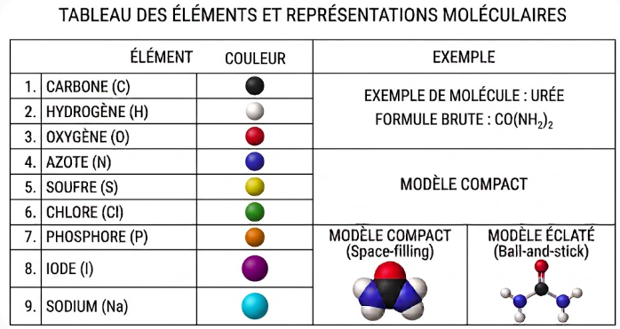
Donne la composition de la molécule en précisant, par des indices, le nombre de chacun des atomes qui la constituent.
Tous les atomes et toutes les liaisons sont représentés, sans tenir compte de la géométrie réelle de la molécule.
Tous les atomes sont représentés, mais pas les liaisons avec les atomes d'hydrogène.
Les atomes de carbone sont liés les uns aux autres pour former des chaînes carbonées, qui peuvent être linéaires, ramifiées ou cycliques. Ces chaînes constituent le squelette carboné des molécules organiques.
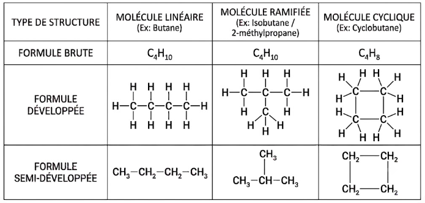
| Formule semi-développée | Nom |
|---|---|
| CH₄ | Méthane |
| CH₃–CH₃ | Éthane |
| CH₃–CH₂–CH₃ | Propane |
| CH₃–CH₂–CH₂–CH₃ | Butane |
| CH₃–CH₂–CH₂–CH₂–CH₃ | Pentane |
| CH₃–CH₂–CH₂–CH₂–CH₂–CH₃ | Hexane |
Le nom est donné par la chaîne carbonée la plus longue, appelée chaîne principale, précédé de la position et du nom, sur cette chaîne, des ramifications appelées groupes alkyles (formule générale CnH2n+1–).
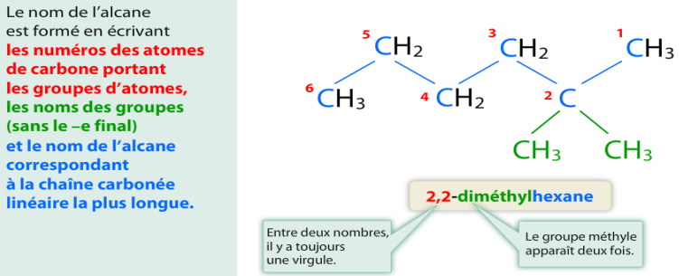
Groupement alkyle : c'est le groupe d'atomes obtenu en retirant un atome d'hydrogène à un alcane. Sa formule générale est CnH2n+1–. Exemples : méthyle (–CH₃), éthyle (–CH₂–CH₃).
Formule topologique : représentation simplifiée où chaque sommet ou extrémité de segment représente un atome de carbone (les hydrogènes portés par ces carbones ne sont pas représentés), et où les autres atomes (O, N, Cl…) sont indiqués explicitement.
Certains groupements d'atomes, appelés groupes caractéristiques, se retrouvent dans de nombreuses molécules et leur confèrent des propriétés chimiques particulières, ce qui permet de les classer par famille.
| Nom | Hydroxyle | Carbonyle | Carboxyle |
|---|---|---|---|
| Groupe caractéristique | –OH | C=O | –COOH |
Composés organiques qui comportent le groupe hydroxyle –OH. Formule brute de la forme CxHyO ou CxHyOH.
CH₃–CH₂–CH(OH)–CH₃ : butan-2-ol (alcool secondaire)
Composés carbonylés, ils possèdent le groupe carbonyle C=O. Terminaison « -al » pour les aldéhydes, « -one » pour les cétones.
Pour les aldéhydes, le groupement carbonyle est situé en bout de chaîne (lié à un seul carbone) ; pour la cétone, il est nécessairement lié à deux carbones.
CH₃–CH₂–CO–CH₃ : butan-2-one (cétone)
Constitués du groupement carboxyle –COOH en bout de chaîne. Terminaison « -oïque » (nom précédé de « acide »).
Glisse-dépose une étiquette sur la case correspondante (ou clique sur l'étiquette puis sur la case).
La spectroscopie infrarouge (IR) est une technique d'analyse d'échantillons et d'identification d'espèces chimiques. Quand une radiation infrarouge de longueur d'onde λ traverse un échantillon, certaines liaisons entre atomes absorbent de l'énergie.
On obtient un graphique appelé spectre infrarouge (ou « spectre IR »), qui représente généralement la transmittance T en fonction du nombre d'onde 𝜈̅. Certains groupes d'atomes donnent des bandes caractéristiques, dont la position dépend peu du reste de la molécule.
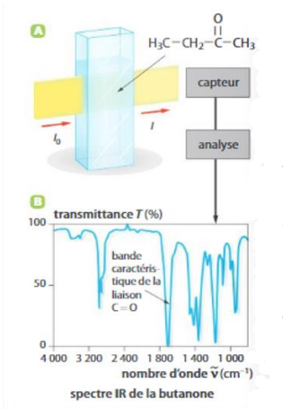
Une bande est dite « forte » lorsque la transmittance est faible (le creux descend bas). Une bande est dite « large » si elle s'étale sur un intervalle de nombre d'onde important.
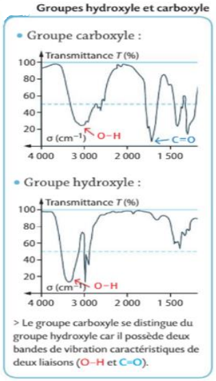
| Liaison | Position (cm⁻¹) | Allure de la bande |
|---|---|---|
| O–H (alcool) | 3200 – 3400 | forte et large |
| O–H (acide carboxylique) | 2600 – 3200 | forte et large |
| C=O (carbonyle) | 1700 – 1760 | forte et fine |
Choisis une famille de composé pour observer l'allure typique de son spectre IR.
- Étape 1 — Prélèvement des réactifs. Avant de prélever les réactifs, il faut rechercher leurs pictogrammes de danger et les consignes de sécurité associées. Si le réactif est solide, on pèse une masse m ; s'il est en solution (soluté), on mesure un volume de solution Vsolution ; s'il est liquide, on pèse une masse m ou on mesure un volume V.
- Étape 2 — Transformation chimique. Le produit est formé au cours de cette étape. Une augmentation de la température permet d'accélérer la réaction et de favoriser la dissolution des réactifs solides. Le montage à reflux permet de chauffer le milieu réactionnel sans perte de matière (les vapeurs se condensent et retombent dans le ballon). À la fin, le milieu réactionnel est refroidi.
- Étape 3 — Isolement. Il consiste à séparer le produit du milieu réactionnel (réactifs n'ayant pas réagi, autres produits, solvant…). L'isolement conduit au produit brut.
- Étape 4 — Analyse. Elle permet l'identification de l'espèce chimique obtenue et le contrôle de sa pureté (mesure d'une caractéristique physique comparée à des valeurs répertoriées, chromatographie, spectroscopie…).
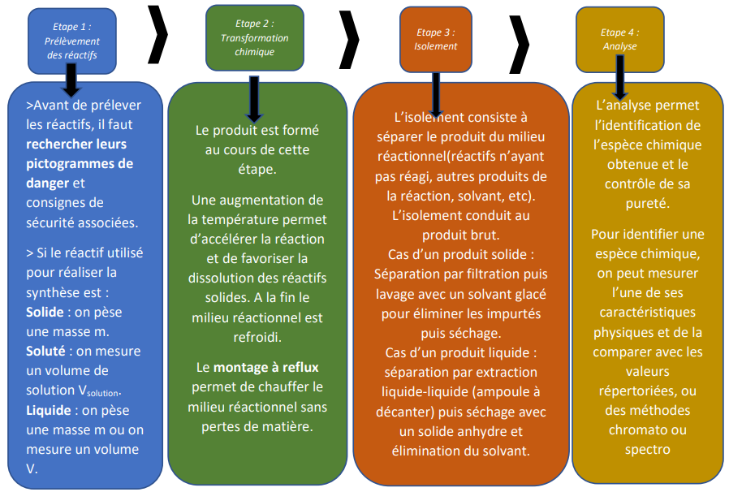
Séparation par filtration, puis lavage avec un solvant glacé pour éliminer les impuretés, puis séchage.
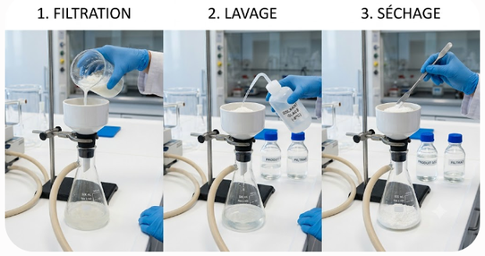
Séparation par extraction liquide-liquide (ampoule à décanter), puis séchage avec un solide anhydre et élimination du solvant (distillation).
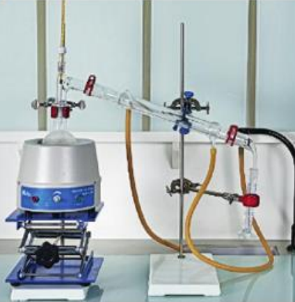
Pour purifier un liquide, on peut réaliser un montage de distillation fractionnée.
Pour identifier une espèce chimique, on peut mesurer l'une de ses caractéristiques physiques (température de fusion sur banc Köfler, température d'ébullition…) et la comparer aux valeurs répertoriées, ou utiliser des méthodes chromatographiques (CCM) ou spectroscopiques (IR).
Le rendement η de la synthèse est le quotient de la quantité np de produit P effectivement obtenue par la quantité maximale nmax attendue (calculée par la stœchiométrie de la réaction, à partir du réactif limitant).
- la transformation chimique n'est pas totale (équilibre, réaction limitée) ;
- des réactions secondaires consomment une partie des réactifs ;
- des pertes de matière ont lieu lors de l'isolement et de la purification (transvasements, produit qui reste accroché à la verrerie, phase mal séparée…).
C₇H₈O + C₄H₆O₃ → C₉H₁₀O₂ + C₂H₄O₂
On obtient en fin de synthèse une masse m = 9,60 g d'éthanoate de benzyle pur (M = 150,2 g·mol⁻¹).
Étape 1 — Quantité de matière maximale de produit attendue nmax
| N° | Nom | Formule semi-développée | Formule brute |
|---|---|---|---|
| 1 | Linalol (nom commun) | (CH₃)₂C=CH–CH₂–CH₂–C(OH)(CH₃)–CH=CH₂ | C₁₀H₁₈O |
| 2 | Citronellal (nom commun) | (CH₃)₂C=CH–CH₂–CH₂–CH(CH₃)–CH₂–CHO | C₁₀H₁₈O |
| 3 | Muscone (nom commun) | cétone cyclique : cycle à 15 atomes de carbone portant un groupe méthyle (position 3) et un groupe carbonyle (position 1) | C₁₆H₃₀O |
| 4 | 2-méthylundécanal (nom officiel, espèce de synthèse) | CH₃–(CH₂)₈–CH(CH₃)–CHO | C₁₂H₂₄O |
| Famille | Groupe caractéristique |
|---|---|
| Cétone | C(=O) entre deux atomes de carbone |
| Aldéhyde | C(=O)H en bout de chaîne |
| Alcool | C–OH |
b. Le nom officiel de la muscone est 3-méthylcyclopentadécan-1-one. Quelle information ce nom donne-t-il sur le cycle carboné ?
| Espèce | Formule semi-développée | Formule brute |
|---|---|---|
| A | CH₃–CO–C₆H₄–CH₂–CH(CH₃)₂ | C₁₂H₁₆O |
| B | CH₃–CH(OH)–C₆H₄–CH₂–CH(CH₃)₂ | C₁₂H₁₈O |
| C (ibuprofène) | CH₃–CH(COOH)–C₆H₄–CH₂–CH(CH₃)₂ | C₁₃H₁₈O₂ |
C₆H₄ désigne le cycle aromatique (benzénique), substitué de part et d'autre.
| Liaison | O–H (hydroxy) | O–H (carboxy) | C–H | C=O |
|---|---|---|---|---|
| σ (cm⁻¹) | 3200 à 3650 | 2500 à 3200 | 2900 à 3100 | 1680 à 1725 |
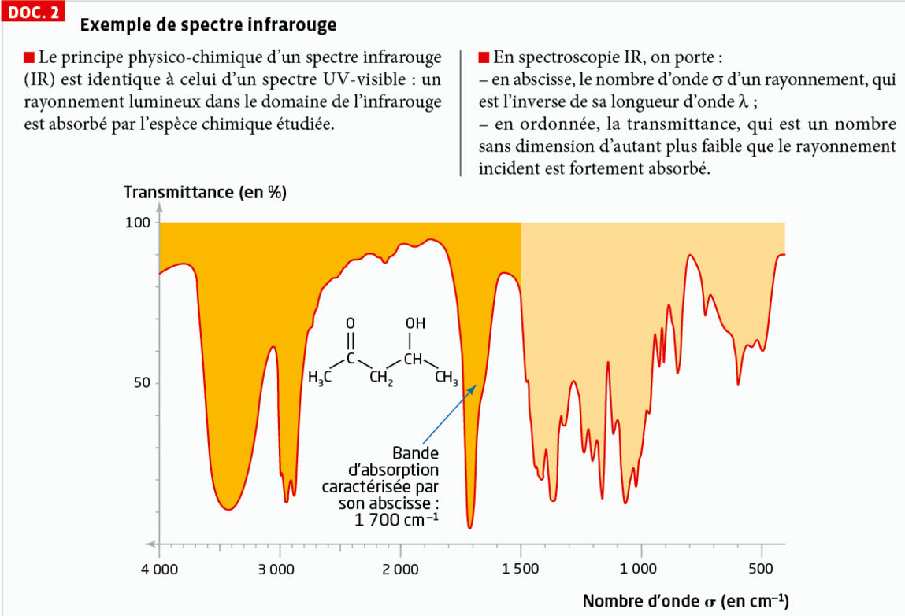
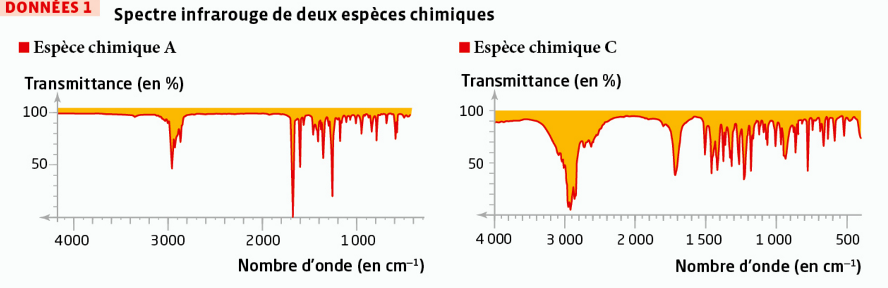
b. Quelle grandeur porte l'axe des ordonnées, et que signifie une valeur faible de cette grandeur ?
c. Associer chaque espèce chimique (A, B, C) à sa famille.
b. Le spectre de l'espèce C (DONNÉES 1) présente une large bande entre 2500 et 3200 cm⁻¹, en plus d'une bande vers 1700 cm⁻¹. Quel groupe caractéristique ces deux bandes signent-elles ensemble ?
c. Le spectre de l'espèce A (DONNÉES 1) ne présente qu'une bande fine et forte vers 1700 cm⁻¹, sans bande large. Quel groupe cela signe-t-il ?
d. La molécule B porte un groupe hydroxyle –OH (pas de C=O). Quelle(s) bande(s) de nombre d'onde supérieur à 1500 cm⁻¹ doit-on s'attendre à observer sur son spectre ?
La bande caractéristique de A (≈1700 cm⁻¹, C=O) est-elle présente sur le spectre de A elle-même ?
Cette même bande est-elle présente sur le spectre de B ?
Cette même bande est-elle présente sur le spectre de C ?
b. Pourquoi la zone 2800-3200 cm⁻¹ ne permet-elle pas d'assurer seule le suivi de la transformation de A en B, puis de B en C ?
c. Un expérimentateur réalise la première étape de la synthèse. Avant de poursuivre, il enregistre le spectre IR du milieu réactionnel et observe une bande d'absorption à 1680 cm⁻¹. Que doit-il en conclure ?
- Dans un ballon monocol de 50 mL, dissoudre 1,00 g de bornéol dans 5 mL d'éthanoate d'éthyle. Ajouter 2,40 g d'oxone et 1,5 mL d'eau distillée.
- Agiter le mélange réactionnel pendant 50 min.
- Ajouter 15 mL d'eau distillée et transvaser le mélange dans une ampoule à décanter. Séparer les phases aqueuse et organique.
- Extraire le camphre de la phase aqueuse avec 10 mL d'éthanoate d'éthyle et rassembler les phases organiques.
- Laver la phase organique afin de la débarrasser des espèces ioniques avec 20 mL d'eau distillée.
- Évaporer le solvant.
- Analyser le produit obtenu par chromatographie sur couche mince en révélant les espèces avec du diiode (DOC. 2).
| Espèce | Formule brute | Solubilité dans l'eau | Solubilité dans l'éthanoate d'éthyle | θfusion (°C) | θvaporisation (°C) |
|---|---|---|---|---|---|
| Éthanoate d'éthyle | C₄H₈O₂ | Faible | — | — | 77,1 |
| Bornéol | C₁₀H₁₈O | Faible | Élevée | 208 | — |
| Camphre | C₁₀H₁₆O | Faible | Élevée | 175 | — |
Pictogrammes de danger : éthanoate d'éthyle (inflammable, irritant) ; bornéol (inflammable) ; camphre (inflammable, irritant, danger pour l'environnement). L'oxone est un solide ionique transformé au cours de la synthèse en espèces ioniques notées I.
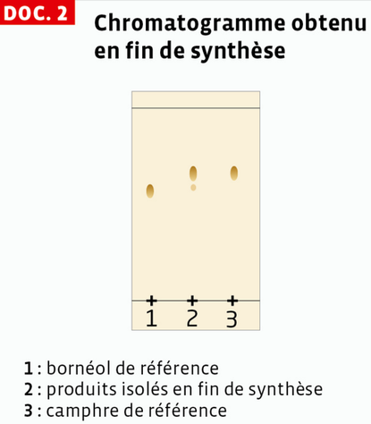
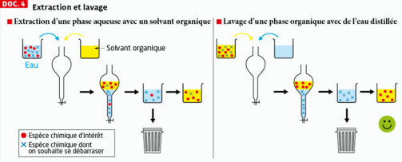
Écrire l'équation d'une réaction ne suffit pas à préparer une espèce chimique : il faut choisir un solvant adapté, parfois un catalyseur, et souvent chauffer longtemps. Une fois le produit formé, il reste dissous dans le milieu réactionnel, mélangé à des traces de réactifs n'ayant pas réagi et à d'autres espèces formées : il faut l'isoler, ce qui peut demander plusieurs essais et le choix d'une technique adaptée à ses propriétés (souvent une meilleure solubilité dans un solvant organique que dans l'eau). Une fois isolé, le produit n'est généralement pas pur : il faut le purifier (chromatographie, distillation, recristallisation…), là encore parfois en plusieurs tentatives. Ce n'est qu'après avoir vérifié sa pureté (température de changement d'état, spectre IR, comparaison à des valeurs de référence…) que l'on peut considérer la synthèse réussie et en rédiger le protocole définitif.
b. Pourquoi lave-t-on ensuite la phase organique avec de l'eau distillée (étape 5) ?
c. Sur le chromatogramme (DOC.2), que représentent les dépôts 1 et 3 ?
C₇H₈O(ℓ) + C₄H₆O₃(ℓ) → C₉H₁₀O₂(ℓ) + C₂H₄O₂(ℓ)
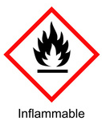
Anhydride éthanoïque — inflammable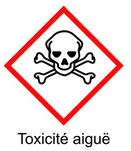
Anhydride éthanoïque — toxicité aiguë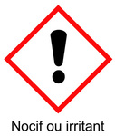
Alcool benzylique — nocif / irritant| Espèce chimique | M (g·mol⁻¹) | ρ (g·mL⁻¹) | Téb (°C) | Solubilités |
|---|---|---|---|---|
| Anhydride éthanoïque | 102,1 | 1,08 | 140 | plutôt soluble dans l'eau salée |
| Acide éthanoïque | 60,1 | 1,05 | 118 | |
| Alcool benzylique | 108,1 | 1,04 | 205 | plutôt soluble dans le cyclohexane |
| Éthanoate de benzyle | 150,2 | 1,05 | 212 | |
| Cyclohexane | 84,2 | 0,78 | 81 | très peu soluble dans l'eau salée |
Utilise les flèches ↑ ↓ pour remettre les étapes dans l'ordre chronologique, puis clique sur « Vérifier ».
Le dibenzalacétone (DBA) est un solide jaune obtenu par synthèse organique. Comme tout produit brut, il doit être purifié avant d'être analysé : la méthode utilisée pour un produit solide est la recristallisation, suivie d'une filtration sur Büchner.
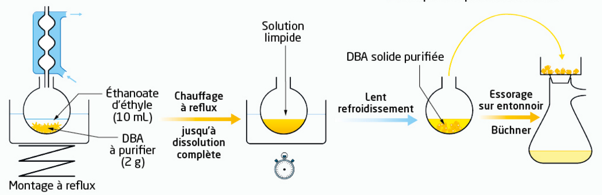
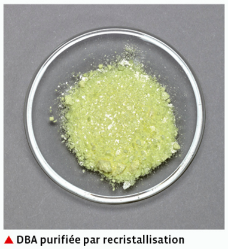
Une fois le DBA purifié et séché, on contrôle sa pureté en mesurant sa température de fusion au banc Köfler et en la comparant à la valeur tabulée.
| Espèce | Tfus tabulée |
|---|---|
| Dibenzalacétone (DBA) | 110 – 111 °C |
Indice : l'absence de bande C=O exclut le groupe carbonyle, donc exclut l'acide carboxylique et la cétone.
Étape 1 — Quelle formule permet de calculer le rendement η ?
Question 1 — Que peut-on conclure de ce spectre IR ?
Question 2 — Quelle formule permet de calculer le rendement η ?
🌿 Mission Parfumeur : Sauvez la note de Lavande !
Le Brief : Vous avez été recruté(e) comme « Nez » et chimiste junior dans une prestigieuse maison de parfumerie à Grasse. Suite à de fortes sécheresses, la récolte de lavande a été catastrophique et l'huile essentielle naturelle vient à manquer. Votre mission : synthétiser la molécule responsable de son odeur, l'acétate de linalyle, pour sauver la production du parfum phare de la maison.
Vous êtes devant l'armoire à produits chimiques virtuelle. Sélectionnez les 2 réactifs nécessaires à la synthèse de l'acétate de linalyle.
Linalol
Anhydride acétique
Éthanol
Acide sulfurique concentré
Butanone
Eau distillée
Assemblez le montage sur la paillasse en cliquant les éléments dans le bon ordre, du bas vers le haut. Attention aux pièges !
Le mélange réactionnel refroidi a été versé dans une ampoule à décanter, avec de l'eau salée (relargage) et du cyclohexane. Après agitation, deux phases se séparent.
| Espèce | Masse volumique |
|---|---|
| Eau salée | d = 1,10 |
| Cyclohexane | d = 0,78 |
| Acétate de linalyle | d = 0,89 |
👉 Clique sur la phase qui contient le produit d'intérêt :
Prouvez à la direction que votre molécule est identique à celle de la nature ! Dépose les 3 taches sur la ligne de base :
🎉 Mission accomplie !
Grâce à votre synthèse d'acétate de linalyle, contrôlée et validée par CCM, la maison de parfumerie peut sauver la note de lavande de son parfum phare. Vous avez mobilisé les 4 étapes d'une synthèse organique : prélèvement raisonné des réactifs, transformation à reflux, isolement par extraction liquide-liquide, et analyse par chromatographie. Bravo, chimiste !
I. Description des entités organiques
- Formule brute / développée / semi-développée / topologique
- Squelette carboné saturé : liaisons C–C simples uniquement
- Nomenclature des alcanes (méthane → hexane) et des alcanes ramifiés
- Groupe hydroxyle –OH → famille des alcools
- Groupe carbonyle C=O → aldéhydes (bout de chaîne, « -al ») et cétones (« -one »)
- Groupe carboxyle –COOH → acides carboxyliques (« acide … -oïque »)
II. Spectroscopie infrarouge
- T = I/I₀ ; spectre = T en fonction de 𝜈̅ = 1/λ
- Bande « forte » = transmittance faible ; bande « large » = étendue en 𝜈̅
- O–H alcool : 3200-3400 cm⁻¹, forte et large (1 bande)
- O–H acide : 2600-3200 cm⁻¹, forte et large
- C=O : 1700-1760 cm⁻¹, forte et fine
III. Synthèses organiques
- 4 étapes : prélèvement, transformation, isolement, analyse
- Montage à reflux : chauffer sans perte de matière
- Isolement solide → filtration ; isolement liquide → extraction liquide-liquide
- η = np/nmax (sans unité ou en %)
- Rendement < 100 % : réaction non totale, réactions secondaires, pertes lors de l'isolement/purification
Vocabulaire clé
- Groupe alkyle : CnH2n+1–
- Produit brut vs produit pur/purifié
- Réactif limitant
- Distillation fractionnée
- Chromatographie sur couche mince (CCM)
- Acide carboxylique
- Composé organique caractérisé par la présence du groupement carboxyle -COOH en bout de chaîne. Le nom est de la forme "acide ...-oïque".
- Alcane et Groupe alkyle
- Un alcane est un hydrocarbure saturé de formule brute générale CnH2n+2. Un groupe alkyle est l'entité obtenue en retirant un atome d'hydrogène à un alcane, de formule CnH2n+1- (ex: méthyle, éthyle).
- Alcool
- Composé organique comportant le groupe caractéristique hydroxyle -OH lié à un atome de carbone tétraédrique.
- Aldéhyde
- Composé carbonylé possédant le groupe carbonyle C=O situé obligatoirement en bout de chaîne (le carbone fonctionnel est lié à un seul autre atome de carbone). Le nom se termine par le suffixe "-al".
- Banc Köfler
- Appareil permettant de mesurer la température de fusion d'un solide. Il est utilisé pour contrôler la pureté d'une espèce chimique : un solide pur fond nettement, sur un intervalle étroit, à une température proche de la valeur tabulée.
- Catalyseur
- Espèce chimique qui accélère une réaction sans être consommée au cours de celle-ci, et qui n'apparaît donc pas dans l'équation de la réaction.
- Cétone
- Composé carbonylé possédant le groupe carbonyle C=O situé à l'intérieur de la chaîne carbonée (le carbone fonctionnel est lié à deux autres atomes de carbone). Le nom se termine par le suffixe "-one".
- Chromatographie sur couche mince (CCM) et rapport frontal Rf
- Technique séparative permettant d'identifier une espèce chimique par comparaison à des références, en exploitant les différences de migration des espèces sur une plaque. Le rapport frontal Rf (distance parcourue par la tache divisée par celle parcourue par l'éluant) est caractéristique d'une espèce dans des conditions données : deux taches à la même hauteur signent la même espèce.
- Distillation
- Technique de séparation d'un mélange liquide basée sur les différences de température d'ébullition des constituants : le composé le plus volatil s'évapore en premier, puis est recondensé par un réfrigérant.
- Distillation fractionnée
- Méthode de séparation et de purification basée sur les différences de température d'ébullition des composés d'un mélange liquide.
- Extraction liquide-liquide
- Technique d'isolement utilisée pour un produit liquide. Elle s'effectue dans une ampoule à décanter en exploitant la différence de solubilité du produit d'intérêt entre deux solvants non miscibles.
- Formule brute
- Formule donnant la composition globale de la molécule en précisant, par des indices, le nombre de chacun des atomes qui la constituent (ex: C₄H₁₀O).
- Formule développée
- Représentation où tous les atomes et toutes les liaisons chimiques sont explicitement dessinés, sans considération pour la géométrie spatiale réelle.
- Formule semi-développée
- Représentation simplifiée de la formule développée où les liaisons liant un atome d'hydrogène à un autre atome ne sont pas représentées.
- Formule topologique
- Représentation très simplifiée où chaque sommet ou extrémité de segment représente un atome de carbone. Les atomes d'hydrogène liés aux carbones sont omis, tandis que les autres atomes (O, N, Cl...) sont indiqués explicitement.
- Groupe caractéristique
- Groupement spécifique d'atomes présent dans une molécule qui lui confère des propriétés chimiques particulières, permettant de classer la molécule au sein d'une famille de composés.
- Isolement et Produit brut
- L'isolement est l'étape consistant à séparer le produit d'intérêt du reste du milieu réactionnel. L'espèce récupérée, souvent encore impure, est appelée le produit brut.
- Lavage
- Étape de purification consistant à agiter une phase organique avec une solution aqueuse (eau distillée, solution saline…) afin d'en extraire les espèces indésirables solubles dans l'eau (par exemple des espèces ioniques).
- Montage à reflux
- Dispositif expérimental permettant de chauffer le milieu réactionnel (pour accélérer la réaction) sans subir de perte de matière, grâce à la condensation des vapeurs.
- Nom commun et nom systématique
- Le nom commun est un nom d'usage (souvent lié à l'origine naturelle de l'espèce) qui ne renseigne pas sur la structure de la molécule. Le nom systématique (ou officiel) se décompose en préfixe, radical et suffixe, et permet de reconstruire la formule semi-développée de la molécule.
- Nombre d'onde
- Grandeur inverse de la longueur d'onde (ν = 1 / λ), classiquement exprimée en centimètres inverses (cm⁻¹) en spectroscopie IR.
- Recristallisation
- Technique de purification d'un solide : on le dissout à chaud dans un solvant approprié jusqu'à dissolution complète, puis on laisse refroidir lentement pour obtenir des cristaux purs, les impuretés (plus solubles) restant en solution.
- Relargage
- Ajout d'une solution ionique saturée (souvent de chlorure de sodium) à un mélange, afin de diminuer la solubilité des espèces organiques dans l'eau et de faciliter la séparation des phases lors d'une décantation.
- Rendement d'une synthèse
- Grandeur évaluant l'efficacité d'une synthèse. Elle est définie par le quotient de la quantité de produit pur effectivement obtenue par la quantité maximale de produit attendue théoriquement.
- Spectroscopie IR
- Technique d'analyse permettant d'identifier des groupes caractéristiques au sein d'une molécule, reposant sur l'absorption d'énergie par les liaisons interatomiques traversées par un rayonnement infrarouge.
- Squelette carboné saturé
- Enchaînement d'atomes de carbone reliés les uns aux autres exclusivement par des liaisons covalentes simples. Ces chaînes peuvent être linéaires, ramifiées ou cycliques.
- Synthèse organique
- Fabrication d'une espèce chimique au laboratoire. Elle se déroule classiquement en 4 étapes : (1) prélèvement, (2) transformation chimique, (3) isolement et (4) analyse.
- Transmittance
- Grandeur physique représentant la fraction de la lumière ayant traversé l'échantillon. Elle est définie par le rapport de l'intensité transmise sur l'intensité incidente.
🧂 Ostralo — Nomenclature des alcanes
Animation qui permet de construire un alcane et d'obtenir son nom.
🧂 Ostralo — Reconnaître les familles en chimie organique
Animation/jeu qui permet de s'entraîner à reconnaître la famille d'une molécule.
🧂 Ostralo — Spectre infrarouge d'une molécule
Page interactive qui permet de vsualiser les liaisons et les bandes d'absorption du spectre infrarouge de quelques molécules.
🎬 Hatier — Physique-Chimie 1re - Schéma bilan : Molécules organiques
Durée : 3 min 38.
🎬 Paul Olivier — Nommer une molécule ?
Durée : 6 min 32.
🎬 Paul Olivier — Nommer les molécules en Chimie organique
Durée : 3 min 45.
🎬 Paul Olivier — Formule SEMI-DÉVELOPPÉE ▶️ TOPOLOGIQUE d'une molécule
Durée : 2 min 23.
🎬 Paul Olivier — Nomenclature des ALCANES
Durée : 7 min 25.
🎬 Paul Olivier — 4 Groupes caractéristiques et familles à connaitre !
Durée : 5 min 28.
🎬 Paul Olivier — NOMENCLATURE des ALCOOLS ✏️ Exercice
Durée : 5 min 51.
🎬 Paul Olivier — Nomenclature des ALDÉHYDES et des CÉTONES
Durée : 5 min 25.
🎬 Paul Olivier — Nomenclature des ACIDES CARBOXYLIQUES
Durée : 5 min 18.
🎬 Paul Olivier — Nomenclature des ESTERS
Durée : 5 min 10.
🎬 Paul Olivier — Nomenclature des AMINES
Durée : 4 min 08.
🎬 Paul Olivier — Nomenclature des AMIDES
Durée : 4 min 06.
🎬 Hatier — Physique-Chimie 1re - Schéma bilan : Synthèses organiques
Durée : 3 min 40.
🎬 Gérard Moreau — Synthèse de composés organiques.
Durée : 12 min 45.
🎬 Ravi Ambroise — La synthèse d'espèces chimiques organiques.
Durée : 11 min 12.
🎬 Paul Olivier — SPECTRE INFRAROUGE ✅ Comment les exploiter ?
Durée : 6 min 23.
🎬 Paul Olivier — Spectre infrarouge : identifier une molécule ✏️ Exercice
Durée : 5 min 07.